WordPress adalah Content Management System (CMS) open-source yang populer untuk membuat website. CMS adalah perangkat lunak yang memudahkan Anda membuat dan mengelola website tanpa perlu memiliki pengetahuan pemrograman.
WordPress dapat digunakan untuk membuat berbagai jenis website, termasuk:
Blog
Situs web bisnis
Toko online
Situs web organisasi
Situs web personal
Keuntungan menggunakan WordPress
WordPress memiliki banyak keuntungan, termasuk:
Mudah digunakan: WordPress memiliki antarmuka yang intuitif dan mudah dipelajari, bahkan untuk pemula.
Komunitas luas: WordPress memiliki komunitas pengguna yang besar dan aktif yang dapat membantu Anda jika Anda mengalami masalah.
Plugin & tema: WordPress memiliki ribuan plugin dan tema gratis dan premium yang dapat Anda gunakan untuk menyesuaikan tampilan dan fungsi website Anda.
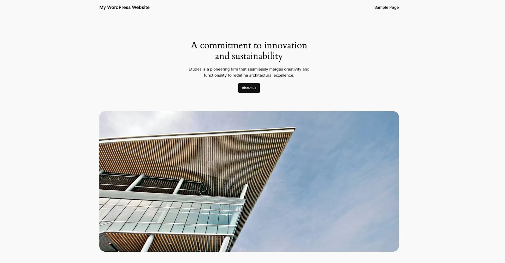
Berikut adalah beberapa contoh website populer yang dibangun dengan WordPress:
Memilih tema dan menyesuaikan tampilan website Anda.
Menginstal dan mengaktifkan plugin untuk menambahkan fitur baru ke website Anda.
Menavigasi dasbor WordPress dan memahami fungsinya.
Mengelola akun pengguna di website Anda.
Apa yang Anda butuhkan:
Domain
Hosting yang mendukung WordPress
Memilih platform web hosting
Web hosting adalah layanan yang menyimpan data dan file website Anda dan membuatnya dapat diakses secara online. Ada dua jenis web hosting utama:
Shared hosting
Pilihan ideal untuk pemula, harganya terjangkau, Anda berbagi sumber daya server dengan website lain.
Managed hosting
Pilihan untuk website dengan trafik tinggi atau membutuhkan keamanan ekstra, server dikelola sepenuhnya oleh penyedia hosting.
Tips:
Pertimbangkan kebutuhan website Anda (trafik, fitur) dan anggaran Anda saat memilih web hosting.
Baca review tentang penyedia hosting sebelum mendaftar.
Mendaftarkan nama domain
Nama domain adalah alamat website Anda. Nama domain yang baik harus mudah diingat dan relevan dengan website Anda.
Tips:
Pilih domain name yang pendek dan mudah diketik.
Hindari menggunakan angka, tanda hubung, atau karakter khusus.
Pastikan domain name Anda belum digunakan oleh website lain.
Menginstal WordPress menggunakan panel kontrol platform web hosting
Panel kontrol adalah antarmuka yang digunakan untuk mengelola web hosting Anda. Setiap penyedia web hosting memiliki panel kontrol tersendiri.
Tips:
Sebagian besar penyedia web hosting menawarkan instalasi WordPress otomatis.
Ikuti petunjuk instalasi WordPress yang disediakan oleh penyedia web hosting Anda.
Jangan mencoba menginstal WordPress secara manual kecuali Anda memiliki pengetahuan teknis.
Aktivitas:
Login ke panel kontrol web hosting Anda.
Cari fitur instalasi WordPress dan ikuti petunjuknya.
Masukkan informasi login untuk website WordPress Anda.
Uji coba website Anda untuk memastikan semuanya berfungsi dengan baik.
Selamat! Anda telah berhasil menginstal WordPress dan siap untuk mulai membangun website Anda.
Menjelajahi tata letak dasbor WordPress
Dasbor WordPress adalah antarmuka yang digunakan untuk mengelola website Anda. Dasbor terdiri dari bar menu dan panel menu.
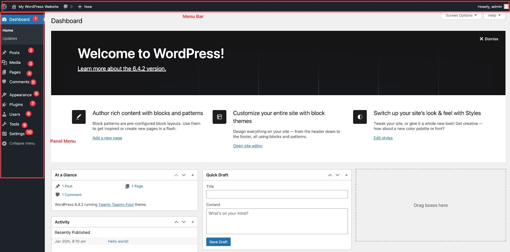
Menu-menu di dasbor WordPress
Menu Dasbor
Menu Posts (Artikel)
Menu Media
Menu Pages (Laman Statis)
Menu Comment (Komentar)
Menu Appearances (Tampilan)
Menu Plugin
Menu Users
Menu Tools (Perkakas)
Menu Settings
Menu Dasbor
Ini adalah tampilan utama administrasi WordPress Anda. Ini menampilkan informasi sekilas seperti posting terbaru, komentar, dan kesehatan situs web. Anda juga dapat dengan cepat mengakses opsi yang sering digunakan seperti membuat posting baru dan navigasi menu lain.
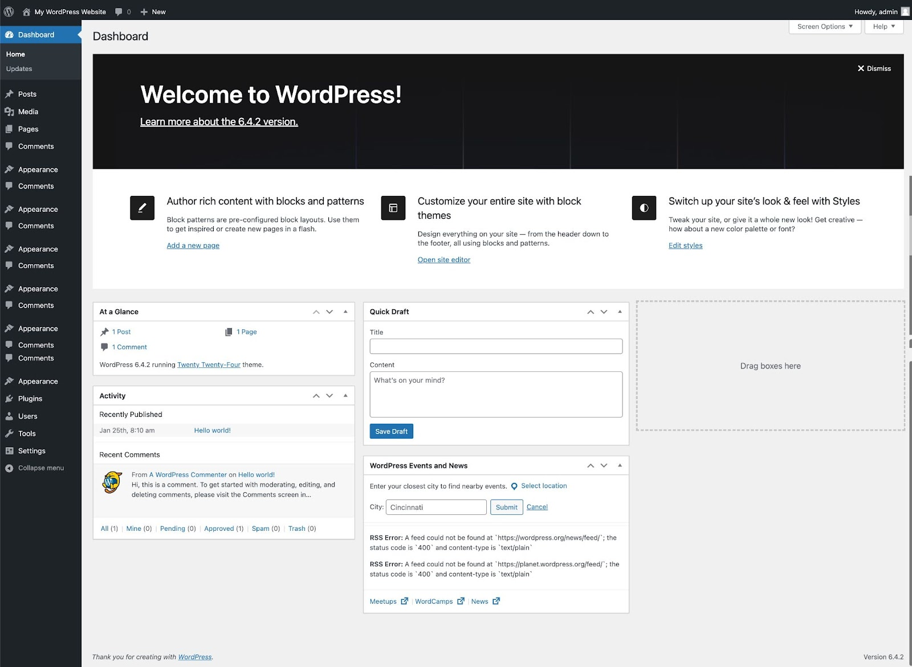
Menu Post (Artikel)
Di sinilah Anda menyusun karya besar Anda! Buat posting blog, artikel berita, atau bahkan daftar. Anda dapat mengelola posting yang ada, mengatur kategori dan tag, dan menjadwalkan publikasi.
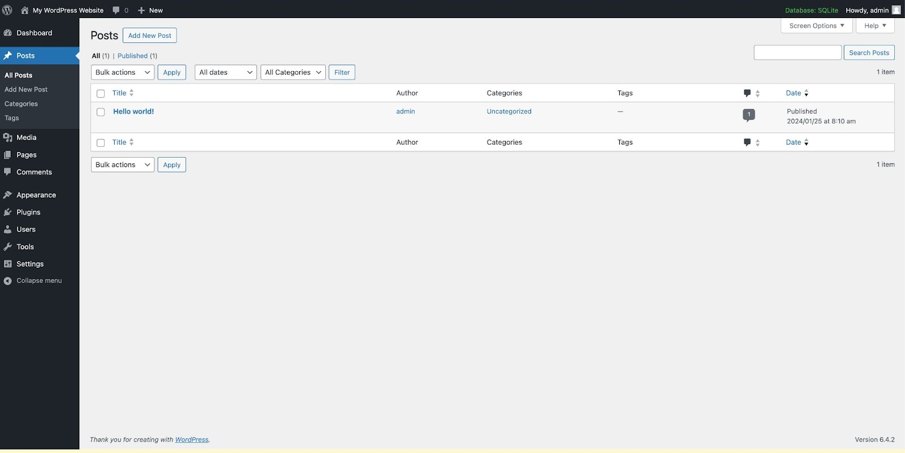
Menu Media
Unggah dan kelola semua media Anda seperti gambar, video, file audio. Edit mereka, atur ke dalam folder, dan tambahkan ke posting dan halaman Anda.
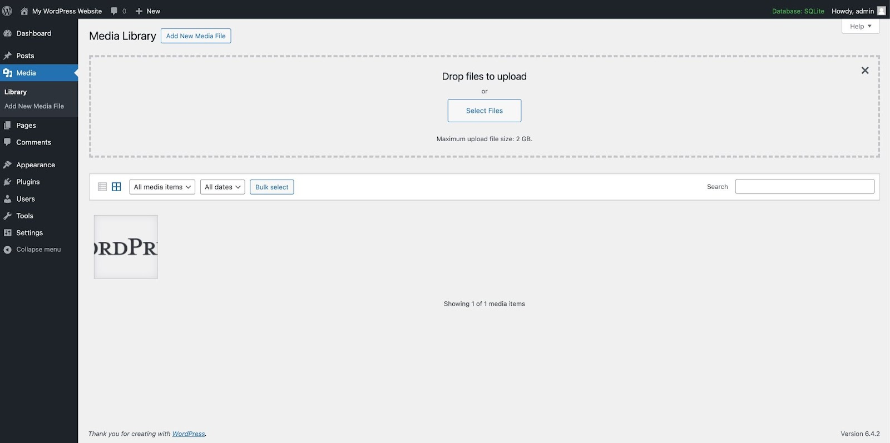
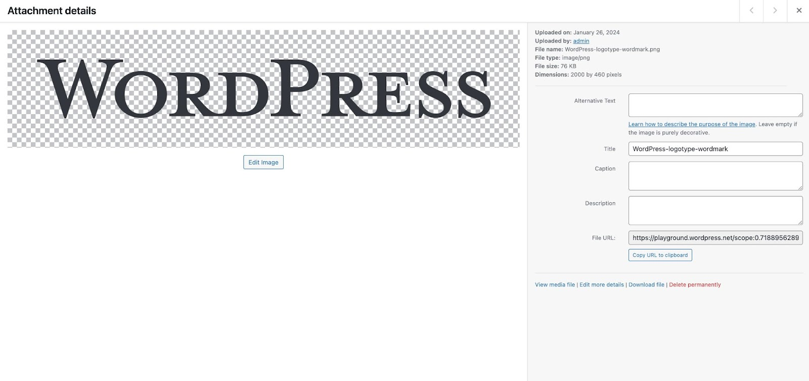
Menu Pages (Laman Statis)
Tidak seperti posting dinamis, halaman dibuat untuk konten yang tetap konstan, seperti halaman "Tentang Kami" atau "Kontak" Anda. Buat, edit, dan kelola halaman statis situs web Anda di sini.
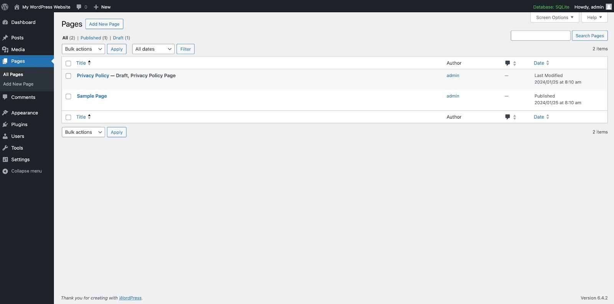
Menu Komentar
Terhubung dengan audiens Anda! Baca dan tanggapi komentar pada posting Anda. Moderasi mereka untuk menjaga percakapan tetap bersih dan konstruktif.
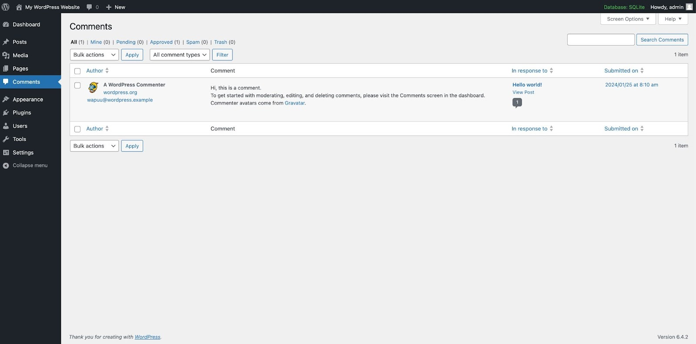
Menu Tampilan
Di sinilah situs web Anda mendapat perubahan! Sesuaikan tema, atur warna dan font, dan bahkan buat menu untuk navigasi yang mudah.
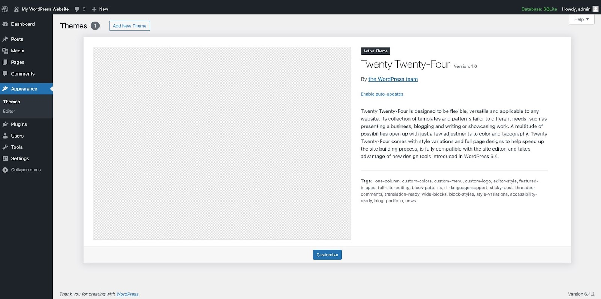
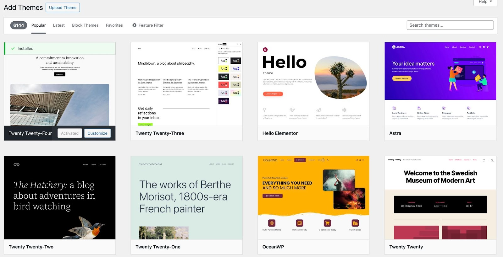
Menu Plugin
Perluas fungsi situs web Anda dengan ribuan plugin yang tersedia. Tingkatkan SEO, tambahkan formulir kontak, buat galeri, dan banyak lagi! Aktifkan dan kelola mereka dari sini.
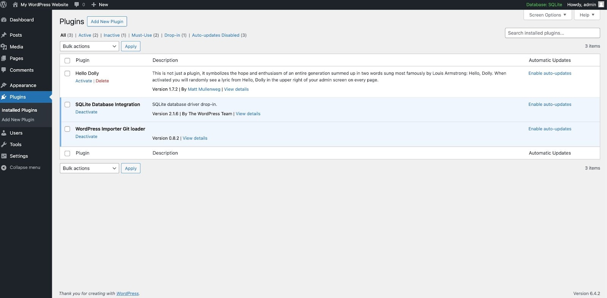
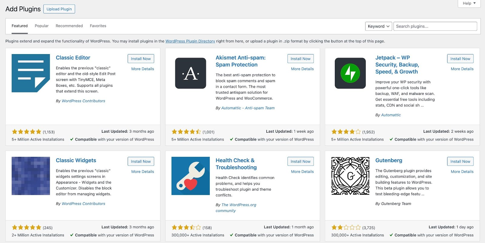
Menu Pengguna
Buat dan kelola akun pengguna untuk kontributor, editor, atau bahkan administrator. Kontrol peran dan izin pengguna untuk menentukan siapa yang dapat melakukan apa di situs web Anda.
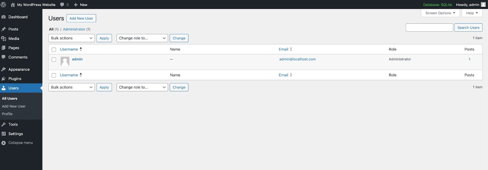
Menu Perkakas
Gunakan alat canggih seperti mengimpor dan mengekspor konten, mengatur redirect, atau bahkan mengedit posting secara massal. Menu ini melayani kebutuhan khusus untuk mengelola situs web Anda secara efisien.
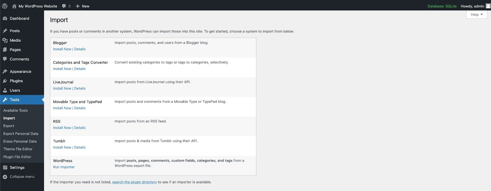
Menu Pengaturan
Ubah pengaturan inti situs web Anda – konfigurasi umum, permalink, opsi keamanan, dan bahkan peran pengguna. Menu ini untuk mengubah pengaturan internal situs web Anda.
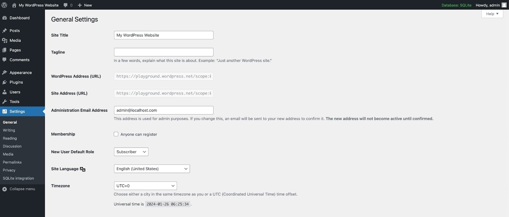
Memahami konsep tema
Tema WordPress adalah kumpulan file yang menentukan tampilan visual website Anda. Tema menentukan warna, font, tata letak, dan elemen lain dari website Anda.
WordPress memiliki repositori tema resmi yang berisi ribuan tema gratis dan premium. Anda dapat menggunakan repositori tema untuk menemukan tema yang sesuai dengan gaya dan tujuan website Anda.
Memilih tema yang sesuai dengan gaya dan tujuan website Anda
Saat memilih tema, penting untuk mempertimbangkan gaya dan tujuan website Anda. Jika Anda memiliki website bisnis, Anda mungkin ingin memilih tema yang profesional dan terorganisir. Jika Anda memiliki website blog, Anda mungkin ingin memilih tema yang lebih santai dan kreatif.
Berikut adalah beberapa hal yang perlu dipertimbangkan saat memilih tema:
Gaya: Apakah Anda ingin website Anda terlihat modern, klasik, atau vintage?
Tujuan: Apakah Anda ingin website Anda digunakan untuk bisnis, blog, atau tujuan lainnya?
Fitur: Apakah tema memiliki fitur yang Anda butuhkan, seperti dukungan untuk gambar, video, atau media sosial?
Menyesuaikan tema menggunakan panel opsi tema
Setelah Anda memilih tema, Anda dapat menyesuaikannya menggunakan panel opsi tema. Panel opsi tema memungkinkan Anda untuk mengubah warna, font, tata letak, dan elemen lain dari website Anda.
Menambahkan dan Mengganti Tema
DevTools provides a quick, easy way to check your manifest.json file. Open up the Manifest pane on the Application panel. If you've added the manifest information correctly, you'll be able to see it parsed and displayed in a human-friendly format on this pane.
Plugin adalah ekstensi yang dapat Anda tambahkan ke WordPress untuk menambahkan fitur baru atau meningkatkan fungsionalitas situs web Anda. Plugin dapat digunakan untuk berbagai tujuan, seperti:
Meningkatkan SEO situs web Anda
Menambahkan formulir kontak
Membangun galeri
Menerapkan keamanan tambahan
Menambahkan dukungan untuk bahasa baru
Menjelajahi kategori plugin populer
Ada ribuan plugin yang tersedia untuk WordPress.
Beberapa kategori plugin populer meliputi:
SEO: Plugin SEO dapat membantu Anda meningkatkan peringkat situs web Anda di mesin pencari.
Keamanan: Plugin keamanan dapat membantu melindungi situs web Anda dari serangan hacker.
Formulir kontak: Plugin formulir kontak dapat membantu Anda mengumpulkan informasi dari pengunjung situs web Anda.
Media sosial: Plugin media sosial dapat membantu Anda terhubung dengan audiens Anda di media sosial.
Menginstal dan mengaktifkan plugin dari repositori WordPress
Langkah-langkah untuk instal dan aktifkan plugin:
Dari dasbor situs WordPress Anda.
Klik menu Plugins.
Cari plugin yang ingin Anda instal.
Klik tombol Install Now.
Klik tombol Activate.
Mengkonfigurasi pengaturan plugin untuk personalisasi fungsi
Setelah Anda menginstal dan mengaktifkan plugin, Anda dapat menyesuaikan pengaturannya untuk menyesuaikan fungsi plugin. Pengaturan plugin biasanya terletak di halaman Settings.
Anda dapat menambahkan pengguna dan membagi mereka ke dalam kelompok sesuai dengan level akses yang mereka butuhkan.
Ada beberapa peran pengguna default di WordPress, masing-masing dengan akses dan kontrol berbeda:
Administrator: Bisa mengakses dan mengatur semua aspek website, termasuk pengguna lain.
Editor: Dapat membuat dan mengedit posting, halaman, dan bahkan posting orang lain. Tapi tidak bisa mengatur pengguna lain.
Author: Bisa menulis dan mempublikasikan posting sendiri, tapi tidak bisa mengedit posting orang lain atau mengatur website.
Contributor: Bisa menulis posting, tapi tidak bisa mempublikasikannya sendiri. Perlu persetujuan dari Editor atau Admin.
Subscriber: Pengguna basic yang bisa berkomentar dan berlangganan ke website Anda.
Menambahkan Akun Pengguna Baru
Untuk menambah pengguna baru, Anda bisa mengikuti cara berikut:
Login ke panel admin WordPress Anda.
Klik menu "Pengguna" > "Tambah Baru".
Masukkan nama pengguna email, dan password. Tip: Buat password yang kuat! Kombinasikan huruf besar, kecil, angka, dan simbol.
Pilih "Peran" pengguna sesuai kebutuhan Anda.
Klik tombol "Tambah Pengguna Baru".
Mengganti Level Akses Pengguna
Sebagai seorang Administrator / pemilik situs, Anda dapat mengganti level akses pengguna lainnya. Berikut caranya:
Klik menu "Pengguna" > "Semua Pengguna".
Klik nama pengguna yang ingin Anda edit izinnya.
Di bawah "Peran", Anda bisa mengubah peran pengguna sesuai kebutuhan.
Gulir ke bawah untuk melihat "Kemampuan Khusus". Centang atau hilangkan centang izin tertentu sesuai keinginannya.
Klik tombol "Perbarui Pengguna".
Mari berkreasi dengan Editor Blok, alat Anda untuk menuangkan ide ke dalam artikel-artikel menakjubkan di WordPress!
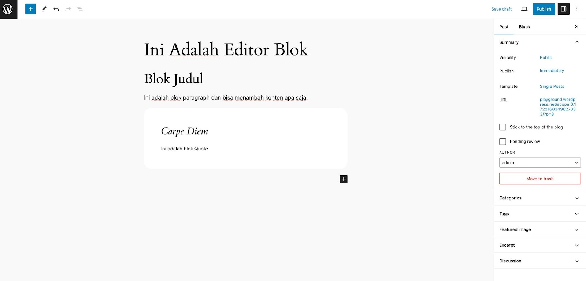
Apa Itu Editor Blok?
Bayangkan Editor Blok sebagai sebuah kanvas kosong tempat Anda menyusun berbagai elemen untuk membangun artikel Anda. Alih-alih menulis kode HTML yang rumit, cukup seret dan jatuhkan "blok" - potongan konten seperti paragraf, gambar, video, kutipan, dan lainnya - untuk membentuk karya Anda.
Komponen-komponen Editor Blok
Editor Blok terdiri dari beberapa komponen utama yang membantu Anda menyusun dan memformat artikel Anda dengan mudah. Mari kita bahas satu per satu:
1. Toolbar:
Bilah toolbar yang familiar ini terletak di atas area edit dan berisi ikon-ikon untuk menambahkan blok baru. Klik ikon "+" atau ketik "/" untuk memunculkan daftar lengkap dari berbagai jenis blok yang tersedia.
2. Area Edit:
Ini adalah ruang kerja utama Anda, tempat Anda menyusun blok-blok untuk membangun artikel Anda. Seret dan jatuhkan blok dari toolbar atau antar blok yang sudah ada untuk mengatur struktur artikel. Klik pada blok untuk mengedit isinya atau mengakses pengaturan lanjutan.
3. Panel Blok:
Saat Anda mengklik sebuah blok, panel blok akan muncul di sebelah kanan area edit. Panel ini berisi pengaturan spesifik untuk blok tersebut, seperti warna, ukuran, margin, dan efek lainnya. Sesuaikan pengaturan ini untuk mempersonalisasi tampilan dan fungsi blok.
4. Inspektur:
Di bagian bawah area edit, Anda akan menemukan inspektur. Ini menampilkan properti dari blok yang Anda klik, seperti jenis blok, ID, dan kelas CSS. Inspektur berguna bagi pengguna yang lebih mahir untuk memahami struktur dan kode di balik layar.
5. Bilah Samping / Side Panel:
Opsional, beberapa tema WordPress mungkin menyertakan bilah samping di editor blok. Bilah samping ini bisa berisi berbagai fitur tambahan seperti:
Daftar kategori dan tag untuk memudahkan pemetaan konten.
Opsi pengaturan SEO untuk mengoptimalkan artikel.
Tombol untuk mengakses draft atau pratinjau artikel.
Membuat Artikel dengan Editor Blok
Langkah Demi Langkah Membuat Artikel
Login ke panel admin WordPress Anda.
Klik menu "Posting" > "Tambah Baru".
Beri judul yang menarik untuk artikel Anda.
Menambah blok ke Artikel:
Lihat bilah toolbar di atas - di sinilah semua jenis blok tersedia.
Klik ikon "+" atau ketik "/" untuk memunculkan daftar blok.
Seret dan jatuhkan blok "Paragraf" untuk memulai menulis.
Tambahkan blok lainnya seperti "Gambar" untuk mempercantik artikel Anda.
Klik "Unggah Media" untuk menampilkan gambar dari komputer Anda, atau cari gambar gratis dari Pixabay atau Unsplash.
Ingin menambahkan video YouTube? Cukup gunakan blok "Embed" dan tempelkan URL video Anda.
Bermainlah dengan beragam blok seperti "Judul", "Kutipan", "Daftar", "Tombol", dan lainnya untuk menambah variasi dan interaksi!
Memformat dan Mengedit Blok:
Klik pada blok untuk mengedit isinya.
Gunakan toolbar teks untuk memformat tulisan Anda - tebal, miring, garis bawah, dan lainnya.
Atur letak dengan drag-and-drop, geser blok untuk mengubah urutannya.
Mempublikasikan Artikel Anda
Setelah Anda selesai menambahkan konten pertama Anda, anda dapat melihat tampilan artikel Anda sebelum dipublikasikan dengan menggunakan fitur preview.
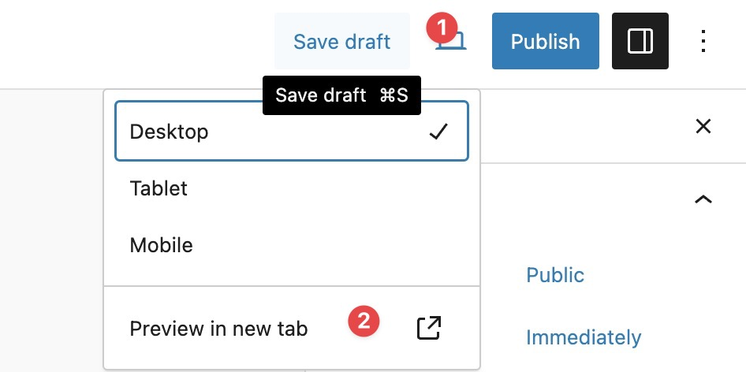
Jika Anda sudah puas dengan konten nya, Anda dapat menekan tombol Publish, dan selanjutnya artikel pertama Anda sudah dapat dibaca oleh publik.
Membuat Halaman Homepage dengan Editor Blok
TBD
Membuat Halaman Statis Lainnya dan Menambahkan ke Menu
TBD
Selamat, Sekarang Anda memiliki sebuah situs WordPress!
Selanjutnya, buatlah konten dan sebarkan kabar gembira ini.
Selanjutnya?
Cek tautan-tautan berikut untuk belajar dan bergabung di komunitas WordPress...